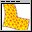

External model elements
The External directory groups model elements devoted to help you run external programs either in your computer or through the network.
The elements in this group are:
-  FreeFem encapsulates access to FreeFem++, either installed in your computer or running on a server.
-
 LabView encapsulates access to the LabVIEW software.
(Created by Hector Vargas <hector.vargas@ucv.cl> and Jesus Chacon <jchacon@bec.uned.es>.)
LabView encapsulates access to the LabVIEW software.
(Created by Hector Vargas <hector.vargas@ucv.cl> and Jesus Chacon <jchacon@bec.uned.es>.)
- SarLab allows you to connect to a remote laboratory using the Sarlab system.
More info about model elements in the Easy Java Simulations' Wiki.